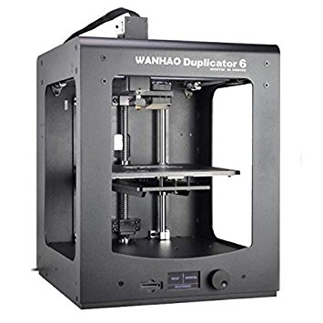

About
The Wanhao D6 boasts a smaller, lighter and faster extruder design to increase print quality and layer alignment. The D6 comes with a digital display to make settings and operations easier for the user. The double- track gantry system reduces vibrations during X and Y axis movement.
Specifications
| Printing technology | FFF Fused Filament Fabrication |
| Extruders | 1 Single Extruder |
| Build volume | 200 X 200 X 180mm |
| Layer resolution | 20 micron, 60 micron, 100 micron |
| Print speed | 30mm-160mm/s |
| Operating nozzle temperature | 260°C (Short-term), 240°C (Long-term) |
| Platform temperature | 40-100°C |
| Supported materials | PLA, ABS, PETG, HIPS, FORMFUTURA, and open materials. |
| Filament diameter | 1.75 mm |
| Connections | USB, SD Card slot |
| Nozzle diameter | 0,4 mm |
| Supported OS | Windows XP, Windows Vista, Windows 7-10, Linux, Mac OX |
User guide
Follow the link below for the full Wanhao D6 user manual
Wanhao Duplicator 6 user manual
Currently no Duplicator 6 plus manual available